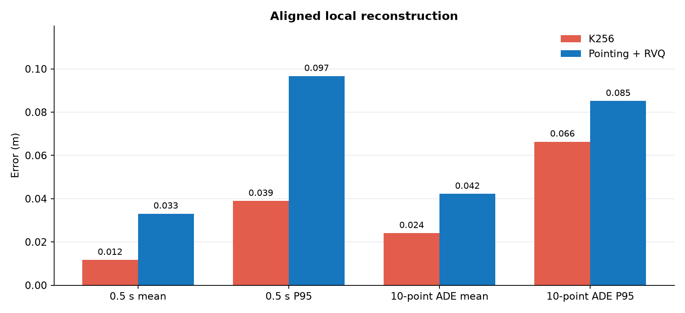
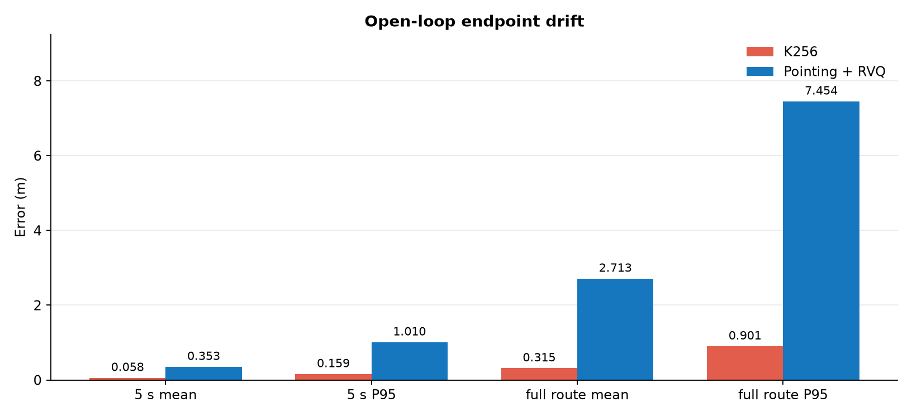
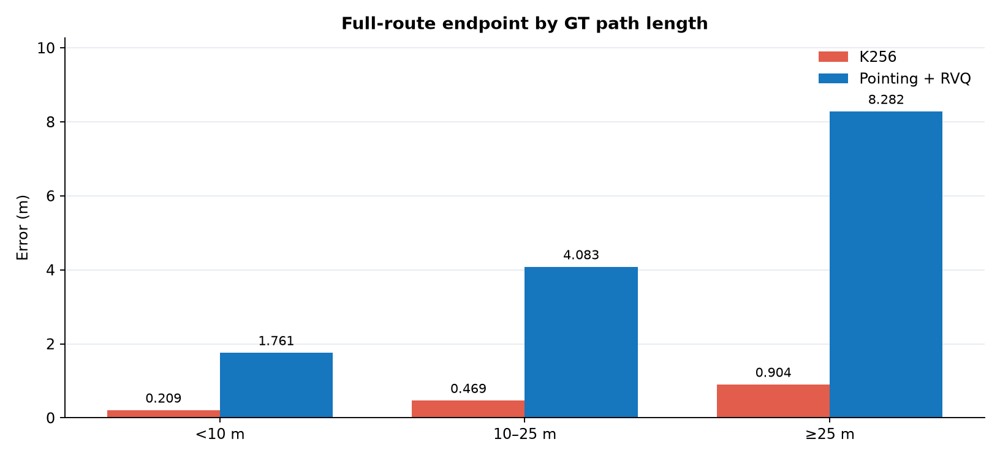
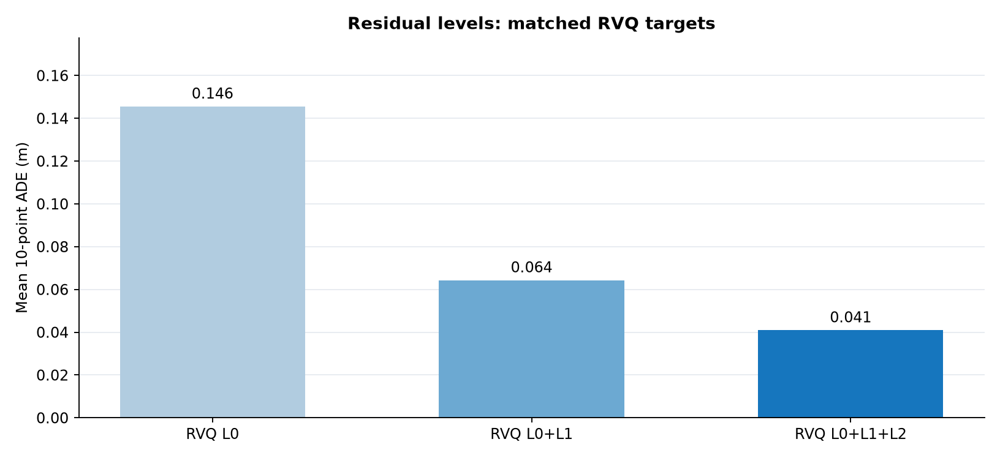
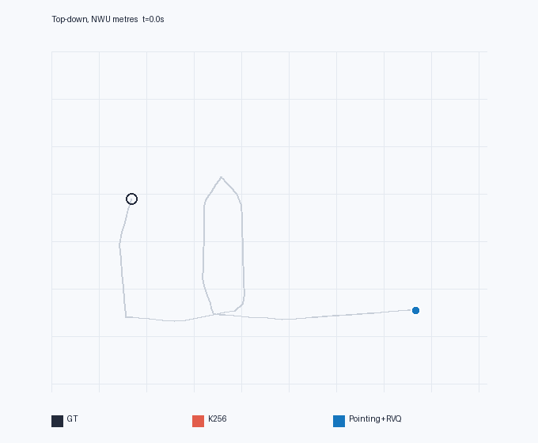
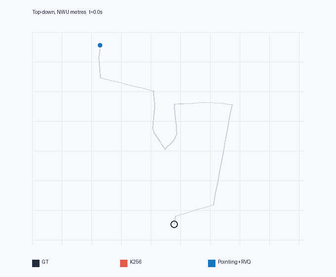
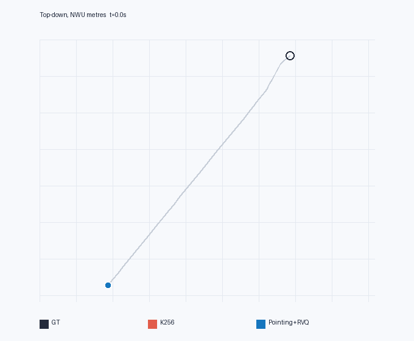
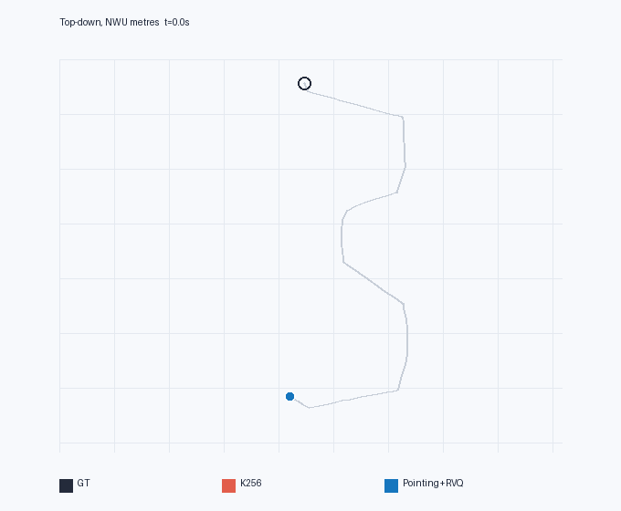

轨迹 1
GT 长度 8.1 m · 43 帧 · 终点误差 K256 0.24 m / RVQ 2.74 m
同一批 GT 轨迹上的编码重建、开环漂移和俯视轨迹对照。两种编码按相同的 episode、帧和时间戳配对。
离线量化评估公开方法与结果Pointing+RVQ 提供 K256 没有的 Object / Affordance 指向标签和一次预测未来 10 个路点的表示。这些额外信息可能对视觉导航训练有用，但本实验不包含训练或模型推理，不能据此判断闭环导航成功率。RVQ 在 2.1% 的配对轨迹上取得更低终点误差，动图中也保留了这类例子。
hm3d_qc_retained_k256_export_v1，属于 HM3D-all V2 发版数据。这里的 V1 是导出格式版本，不把它当作另一套 HM3D 轨迹。

| 指标 | 配对数 | K256 均值 m | RVQ 均值 m | K256 P95 m | RVQ P95 m | 定义 |
|---|---|---|---|---|---|---|
| 单步位置误差 · 0.5 秒 | 393,272 | 0.012 | 0.033 | 0.039 | 0.097 | 同一 GT 帧；已覆盖的 RVQ 帧 |
| 局部 10 路点 ADE | 393,272 | 0.024 | 0.042 | 0.066 | 0.085 | 按 RVQ 实际时间戳；忽略终点填充 |
| 5 秒段终点误差 | 35,401 | 0.058 | 0.353 | 0.159 | 1.010 | 每段从 GT 起点重置 |
| 整条轨迹终点误差 | 8,600 | 0.315 | 2.713 | 0.901 | 7.454 | 仅两者可完整计算的相同轨迹 |
整条轨迹统计使用 8,600 条相同轨迹；0.5 秒 RVQ 路点可插值覆盖率 100.00%。方向角和进一步分层数据见 机器可读结果。


路径长度分层样本数：<10 m 为 5,229 条，10–25 m 为 3,284 条，≥25 m 为 87 条；长路径层样本较少。
黑色为 GT，红色为 K256，蓝色为 RVQ；浅灰线给出完整 GT 路径，空心圆标出 GT 终点。三条轨迹从同一真实起点出发，使用相同世界坐标尺度。背景是坐标网格，不表示 NavMesh 墙体。
GT 长度 8.1 m · 43 帧 · 终点误差 K256 0.24 m / RVQ 2.74 m
GT 长度 27.3 m · 112 帧 · 终点误差 K256 0.29 m / RVQ 6.88 m

GT 长度 21.8 m · 138 帧 · 终点误差 K256 1.06 m / RVQ 4.35 m

GT 长度 11.6 m · 42 帧 · 终点误差 K256 0.73 m / RVQ 0.15 m

GT 长度 26.1 m · 119 帧 · 终点误差 K256 0.61 m / RVQ 11.87 m

| 维度 | K256 | Pointing+RVQ |
|---|---|---|
| 动作表示 | 每 0.5 秒一个机体增量 token；末帧 STOP=0 | 每帧 3 个 RVQ token 解出 10 个局部路点；另有 Object / Affordance 2 个 token |
| 优点 | 动作序列短，直接适配 2 Hz 控制；本次量化漂移较小 | 多步局部几何和语义指向更丰富；3 层残差提高路点重建质量 |
| 代价 | 单 token 无显式目标指向和多步路点 | 5 token/帧、时间间隔不固定；需处理 loss mask、点不可见和终点哨兵 |
以发版的 401,872 个采样帧计算，K256 每帧 1 个动作 token，Pointing+RVQ 每帧 5 个 token。这是序列预算对比，RVQ 同时编码了更多任务信息，因此不是压缩率的同义词。Object 投影可见率 24.8%，Affordance 普通可投影点比例 44.8%；其余状态包括遮挡、转向、停止等，并非统一视为错误。
上传的 K256 发版日志给出的全保留集 P95 数值使用原报告流程；本页数字来自新的配对场景样本和统一时间轴，不能把两组数值直接拼成一组试验。
数据来源：HM3D K256 原发版页 · 固定版本 RVQ 码本 · LightNav-0 官方仓库。